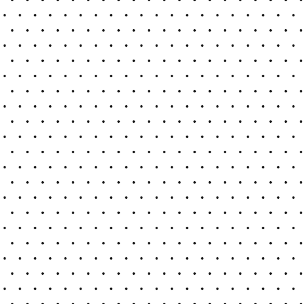

Nazalost Marko nije upisao Fakultet iz vise razloga. Prvi je sto nije voleo da uci, drugi sto ne bi voleo da ide u inostranstvo i da se bori sa svim problemima, a naravno jedan od glavnih razloga je to sto Marko voli novac, pa je poceo da radi u nasoj prodavnici sa nasim roditeljima. roditelji su pokusali da ga ubede da upise Fakultet i studira bilo sta kako bi imao diplomu, cak iako nije voleo da uci, ali Marko nije zeleo, pa je ostao u rodnom gradu da radi u nasoj radnji.
Marko Bondokic
Osnovne informacije o osobi:
- Bondokic
- Marko
- 29.10.2002.
- 1.80cm
- 90kg
Prezime:
Ime:
Datum rodjenja:
Visina:
Tezina:

Tekst o Marku:
Marko je rodjen dve godine nakon Nikole, takodje u Oktobru. U detinjstvu je bio veoma ljubazan prema meni a i danas se razumemo. Marko je kao dete bio mrzovoljan i nije hteo nista da radi, sto se vremenom promenilo. Trenirao je rukomet nekoliko godina, sve dok nije ostali bez trenera zbog drugog posla. Marko voli izlaske, zurke, drustvo i dobar odmor. Srednju skolu je zavrsio u rodnom mestu Kladovu, a danas sa roditeljima pomaze i radi u nasoj radnji. Marko ne voli da putuje ali je bio u mnogo zemalja sveta.


Mali Marko
Marko je kao dete bio smedj decak, bio je nizak i poslusan decak. Moji roditelji su se uvek vise brinuli o njemu nego o meni, tako da je bio njihov mezimac. U detinjstvu se uvek igrao sa mnomigrackama ili neke igre napolju. Kada je malo odrastao, zavoleo je video igrice koje je poceo da igra stalno sa skolskim drugovima. Ceo dan nije silazio sa kompljtera.
Osnovna skola
Osnovna skola zavrsio je u rodnom gradu Kladovu. Na pocetku Osnovne skole upoznao je nove drugare, sa kojima se druzi i danas. Generacija koja se odlicno razume, a Marko je imao srecu da bude u takvoj generaciji. Imao je i dobre ucitelje pa nije imao problema sa skolom, sem sto Marko i ne voli bas da uci.


Srednja skola
Srednja skolu je zavrsio u Kladovu, gradu u kome i zivi. Zavrsio je i srednju skolu koju sam jako pohadjao u njegovom rodnom gradu, sa drustvom koje se nije mnogo promenilo, sem sto je upoznao nekoliko novih prijatelja. Marko nije bas voleo da uci, pa je sa teskocom zavrsio Srednju skolu. Zavrsio je sa dobrim ocenama, sto njemu nije bilo vazno koliko i meni, jer Marko nije hteo da ide na Fakultet, pa mu ocena nije bila vazna. Zavrsio je Sredju skolu za pomorkog masinskog tehnicara, sto je veoma interesantno ali ne bas lako.

O Fakultetu:


Generalni tekst
Marko voli i automobile, voli i da putuje, ali ne toliko sa roditeljima, vise voli da putuje sa prijateljima i devojkom. Kao dete je isao i sa roditeljima, sto se promenilo od njegovog odrastanja. Bio je u mnogo zemalja sveta, ali kaze da zeli da putuje jos mnogo vise. Voli da slusa muziku sa slusalicama, ali jako glasno, sto mi ne deluje zdravo, rekao sam mu da to nije zdravo, ali ne zeli da slusa. Nekoliko puta je isao na odmor sa prijateljima, sto mu se dopalo i zeli da ponovi. Iako je Marko mladji od mene, ponasa se kao stariji covek i tako i izgleda.